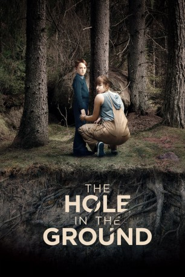

#12086 The Hole in the Ground
 
 IMDB-Wertung: 5.7 / 10
IMDB-Wertung: 5.7 / 10  Tomatometer: 85
Tomatometer: 85  Metascore: 63
Metascore: 63 
Sarah versucht ihre Vergangenheit hinter sich zu lassen und zieht mit ihrem achtjährigen Sohn Chris an den Rand einer abgelegenen Kleinstadt. Als Chris nach einem Streit in den Wald läuft, entdeckt Sarah auf der Suche nach ihm ein riesiges Senkloch im Boden. Chris kehrt scheinbar unversehrt zurück, doch schon bald bemerkt Sarah beängstigende Veränderungen in seinem Verhalten. Die verstörende Begegnung mit der verwirrten Nachbarin, die vor Jahren ihr eigenes Kind tötete, verstärkt Sarahs Misstrauen nur noch mehr. Ist der Junge, der in ihrem Haus lebt, wirklich ihr Sohn Chris? Lee Cronin hat mit seinem fesselnden Debüt eine wahre Genre-Perle voller Atmosphäre und Suspense erschaffen. Seána Kerslake brilliert als junge Mutter, für die der eigene Sohn zur Quelle des Grauens wird.
Jahr: 2019
Dauer: 90 Minuten
FSK: 16
Land: Irland Studio: Weltkino FilmverleihTonspuren:
Untertitel: Deutsch,
Auflösung: 1080p (1920x804) Größe: 3307 MB
Genre: Horror
Regisseur: Lee Cronin
Drehbuch: Lee Cronin, Stephen Shields
Soundtrack: Stephen McKeon
Darsteller:
- Seána Kerslake als Sarah O'Neill
- James Quinn Markey als Chris O'Neill
 Kati Outinen als Noreen Brady
Kati Outinen als Noreen Brady- David Crowley als Teacher
- Simone Kirby als Louise Caul
- Steve Wall als Rob Caul
- Eoin Macken als Jay Caul
 James Cosmo als Des Brady
James Cosmo als Des Brady- Alain Eloy als A
- Sarah Hanly als Lil Jones
- Bennett Andrew als Doctor
- John Quinn als Detective
- Miro Lopperi als A
- Karim Barras als A
- Helena Coppejans als A
- Grégory Praet als A
- Kobe Truijens als A
- Stevie Greaney als Perent (uncredited)
- Chloe Grogan als School Girl (uncredited)
- David McMahon als Parent (uncredited)
Datei: X:\2019(G-M)\Hole in the Ground, The (2019, FSK16, 1920x804).mkv seit 01.12.2019
Festplatte: HD 2018(G-Z)-2019(A-Z)
 Es gibt insgesamt 47 Filme in der Gruppe '2019(G-M)'
Es gibt insgesamt 47 Filme in der Gruppe '2019(G-M)'